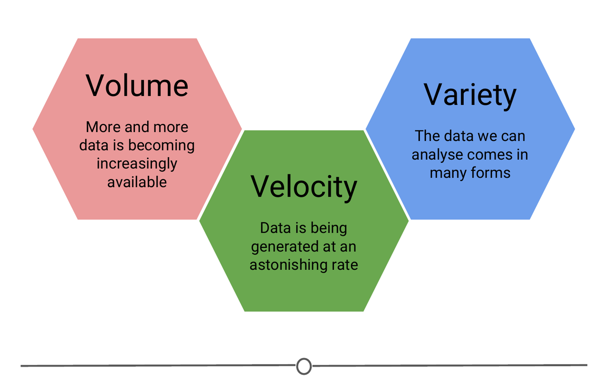

Introduction to data science
My notes¶
Data science¶
- Data science involves statistics, computer science and mathematics.
- Machine learning and artificial intelligence are two of the most popular branches of data science these days.
- Three key features of Big Data
- Volume - Deals with huge amounts of data.
- Velocity - Data is generated rapidly, also involves real time data.
- Variety - Deals with structured and unstructured data.

- A data scientist is someone who applies data science tools to data to answer questions.
- Data scientists usually have a combination of the following skills:

Data¶
There are several definitions of data. The definition provided by Wikipedia is "A set of values of qualitative or quantitative variables".
There are two kinds of data we usually come across:
- Structured data - Data that can be stored in tabular format (rows and columns) and each variable (or column) has a specific data type (numeric, text, category, etc)
- Unstructred data - Any data that is not structured is unstructed data. Some examples are twitter data, facebook comments, sequencing data (medical, genome data), medical records, languages, images, etc
Variables
- Quantitative - measureable, numeric (integers or real numbers).
- examples: age, distance, time, etc
- Qualitative - non-measurable (example: categorical or user assigned)
- examples: name, severity(High, Medium, Low), ranking, etc
- Quantitative variables can be discrete or continuous*.
Data science project¶
Steps or life cycle of a data science project
- Business case (forming a question, scope analysis)
- Data collection (finding or generating data)
- Data pruning (data cleansing, data manipulation, data visualization)
- Data analysis (Exploratory and/or Inferential statistics)
- Data Modeling (Machine Learning, Artificial Intelligence)
- Closure (Conclusions, reporting, communication to stakeholders, future scope)
* Johns Hopkins University course stated that "Quantitative variables are measured on ordered, continuous scales", which, in my opinion, is a vague statement. Quantitative variables are measured not only on continuous scales but also on discrete (non-continous) scales. Some examples of discrete quantitative variables are 'age in years', 'number of days since first medication', 'number of pencils in a box', etc
Comments